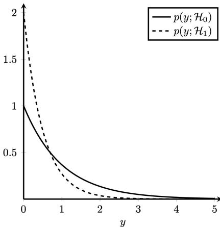

4.1 Likelihood ratio test#
What the exam asks#
You get two possible stories for a measurement \(x\), each with its own PDF (probability density function: the curve that says which values of \(x\) are likely):
- \(\mathcal H_0\): "nothing is there" (no device, noise only, the student wrote it), with PDF \(p(x\mid\mathcal H_0)\).
- \(\mathcal H_1\): "something is there", with PDF \(p(x\mid\mathcal H_1)\).
Then they ask some of: (a) build the likelihood ratio test and simplify it to a rule like "decide \(\mathcal H_1\) if \(x>\gamma\)", (b) shade \(P_{FA}\) and \(P_M\) in a sketch, © compute \(P_{FA}\) and \(P_D\), or the threshold for a given \(P_{FA}\).
The idea in one minute#
You measured one \(x\). Ask each story: "how likely was this \(x\) under you?" That is the height of its PDF at \(x\). If the \(\mathcal H_1\) curve is much higher than the \(\mathcal H_0\) curve at your \(x\), say \(\mathcal H_1\).
So the test is a ratio of heights compared with a number \(\lambda\) (also called \(\eta\) or \(\gamma\), it is just "how convinced do I need to be"):
After a bit of algebra this always becomes a cut on the \(x\) axis: a threshold \(\gamma\). Two mistakes are possible, and the threshold trades one for the other:
| what happened | name | area under... | |
|---|---|---|---|
| \(P_{FA}\) | \(\mathcal H_0\) true, you said \(\mathcal H_1\) | false alarm | the \(\mathcal H_0\) curve, in the "decide \(\mathcal H_1\)" zone |
| \(P_M\) | \(\mathcal H_1\) true, you said \(\mathcal H_0\) | miss | the \(\mathcal H_1\) curve, in the "decide \(\mathcal H_0\)" zone |
| \(P_D=1-P_M\) | \(\mathcal H_1\) true, you said \(\mathcal H_1\) | detection | the \(\mathcal H_1\) curve, in the "decide \(\mathcal H_1\)" zone |
Drag the threshold. Watch the blue area (\(P_{FA}\)) and the red area (\(P_M\)): you can never shrink both at once.
Now switch to the Nov 2022 tab. There the \(\mathcal H_1\) curve is the one that is tall near 0, so small values point to \(\mathcal H_1\): the rule becomes "\(y<\gamma\)" and the false alarm area sits on the left. This is the trap the exam loves.
The recipe#
LRT in 5 steps
- Ratio. Write \(\dfrac{p(x\mid\mathcal H_1)}{p(x\mid\mathcal H_0)}>\lambda\). Cancel what you can. With \(N\) independent samples, each PDF is a product over \(n\), so the ratio is a product too.
- Log both sides. \(\ln\) keeps the direction of \(>\) (it is an increasing function). Use \(\ln(ab)=\ln a+\ln b\), \(\ln e^{u}=u\), \(\ln x^k=k\ln x\).
- Isolate \(x\) (or \(\sum x_n\), \(\sum x_n^2\), ...). Every time you multiply or divide by a negative number, flip the inequality.
- Write the rule: "decide \(\mathcal H_1\) if \(x>\gamma\)" (or \(<\)), with \(\gamma\) written in terms of \(\lambda\).
- Errors. \(P_{FA}=\int p(x\mid\mathcal H_0)\,dx\) over the decide-\(\mathcal H_1\) zone; \(P_D=\int p(x\mid\mathcal H_1)\,dx\) over the same zone; \(P_M=1-P_D\).
Watch it once: April 2025 · 4a#
Final exam, 13 April 2025 · 4a · 0.5 p
You are conducting a likelihood ratio test using a single datapoint \(x\), \(0 < x < 1\) whereby \(p(x) = k_1 \theta x^{k_2 \theta - 1}\). Two hypothesis can be distinguished
If \(\lambda = 0.2\), \(k_1 = 1\), and \(k_2 = 2\), what is the value for \(x\) for which \(\mathcal{H}_1\) should be accepted?
Step 1 · Write both PDFs. With \(k_1=1\), \(k_2=2\): \(p(x)=\theta x^{2\theta-1}\). Under \(\mathcal H_0\) (\(\theta=3\)): \(3x^{5}\). Under \(\mathcal H_1\) (\(\theta=6\)): \(6x^{11}\).
Step 2 · Ratio > λ.
(dividing powers: \(x^{11}/x^5=x^{11-5}=x^6\)).
Step 3 · Isolate \(x\). Divide by 2 (positive, no flip): \(x^6>0.1\). Take the 6th root (increasing, no flip): \(x>0.1^{1/6}\). On the calculator: \(0.1^{1/6}=e^{\ln(0.1)/6}=e^{-0.3838}\approx0.681\). No log was needed here because there was no exponential.
Step 4 · The rule. Accept \(\mathcal H_1\) when \(\mathbf{0.681\lt x\lt 1}\) (the upper limit 1 comes from the problem: \(0\lt x\lt 1\)).
Watch it once more: November 2022 · 4c–4e (the flip)#
Final exam, 7 November 2022 · 4c (0.5 p), 4d (0.25 p), 4e (0.5 p)
Under the two hypotheses, a single observation \(x\) admits a zero mean Laplacian distribution, but with different variances:
Each observation \(x_n\) of the vector \(\mathbf{x}\) (length \(N\)) is independent and identically distributed. 4c Show that the likelihood ratio test takes the form \(\sum_{n=0}^{N-1} |x_n| \underset{\mathcal{H}_1}{\overset{\mathcal{H}_0}{\gtrless}} \gamma'\) and determine \(\gamma'\). 4d For \(N = 1\), with \(Y=|X|\): \(p(y; \mathcal{H}_0) = e^{-y}\), \(p(y; \mathcal{H}_1) = 2e^{-2y}\). Indicate \(P_{FA}\) and \(P_M\) for \(\gamma' = 1\) in the plot.

4e For a \(P_{FA} = 0.1\) calculate the threshold \(\gamma'\), and the probability of detection \(P_D\) for it.Step 1 · Ratio for ONE sample. Same recipe as always: \(\dfrac{p(x\mid\mathcal H_1)}{p(x\mid\mathcal H_0)}\). Here that is
Two small moves. (i) Dividing by \(\tfrac12\) is the same as multiplying by 2, so the \(\tfrac12\) becomes a \(2\) in front. (ii) Two powers of \(e\) divided: \(\dfrac{e^{a}}{e^{b}}=e^{a-b}\) (subtract the exponents). With \(a=-2|x|\) and \(b=-|x|\):
Step 2 · Ratio for \(N\) samples. The samples are independent, so the PDF of the whole vector is the product of the PDFs of each sample (that is what "independent" buys you, see 1.3). The same factor \(2e^{-|x_n|}\) appears once per sample, \(n=0,1,\dots,N-1\):
The last equality uses \(e^{a}e^{b}=e^{a+b}\) (multiplying powers of \(e\) adds the exponents), so all the \(e^{-|x_n|}\) merge into one \(e\) whose exponent is \(-(|x_0|+\dots+|x_{N-1}|)=-\sum_n|x_n|\). Tiny check, \(N=3\), \(\mathbf x=(0.5,\,-1,\,0.5)\): \(\sum|x_n|=0.5+1+0.5=2\), so \(L=2^3e^{-2}=8\cdot0.1353=1.083\).
The test is: decide \(\mathcal H_1\) if \(L(\mathbf x)>\gamma\) (the threshold called \(\lambda\) above; the exam calls it \(\gamma\), and it is a number we are free to choose). So:
Step 3 · Take \(\ln\) to get rid of the \(e\). \(\ln\) is increasing, so \(>\) stays \(>\). Use \(\ln(ab)=\ln a+\ln b\), \(\ln(2^N)=N\ln2\) and \(\ln e^{u}=u\):
Step 4 · Isolate the sum, and FLIP. First subtract \(N\ln2\) from both sides (no flip, it is only a subtraction):
Now the sum has a minus sign in front and we want it alone, so multiply both sides by \(-1\). A negative number: the inequality flips (\(>\) becomes \(<\)), and the right side changes sign:
Check the flip with numbers: \(-3>-5\) is true; multiply by \(-1\): \(3<5\) (true), whereas \(3>5\) would be false.
So we decide \(\mathcal H_1\) when the sum is small. In the exam's notation, "decide \(\mathcal H_1\) when the sum is below \(\gamma'\)" is written \(\sum|x_n|\ \underset{\mathcal H_1}{\overset{\mathcal H_0}{\gtrless}}\ \gamma'\): the symbol under the sign (\(\mathcal H_1\)) is the one chosen when the left side is smaller, the one on top (\(\mathcal H_0\)) when it is bigger. That is exactly the form asked in 4c. It makes sense: \(\mathcal H_1\) is the narrow curve \(e^{-2|x|}\), concentrated near 0, so small \(|x_n|\) point to it. Answer 4c (this is the form the exam asks to show):
Read: if the sum is bigger than \(\gamma'\) decide \(\mathcal H_0\), if it is smaller decide \(\mathcal H_1\).
Step 5 · Shade (4d). Decide \(\mathcal H_1\) when \(y<1\). \(P_{FA}\) = area under the \(\mathcal H_0\) curve \(e^{-y}\) left of 1. \(P_M\) = area under the \(\mathcal H_1\) curve \(2e^{-2y}\) right of 1. (Check it in the widget above, tab Nov 2022.)
Step 6 · Threshold from \(P_{FA}\) (4e). \(P_{FA}=\int_0^{\gamma'}e^{-y}\,dy=\big[-e^{-y}\big]_0^{\gamma'}=1-e^{-\gamma'}\). Set it to 0.1: \(e^{-\gamma'}=0.9\), so \(\gamma'=-\ln0.9\approx\mathbf{0.105}\).
\(P_D=\int_0^{\gamma'}2e^{-2y}\,dy=1-e^{-2\gamma'}=1-(e^{-\gamma'})^2=1-0.81=\mathbf{0.19}\).
Your turn#
Resit, June 2026 · 4b · 1 p
A wireless sensor measures the received signal envelope \(X\). Under \(H_0\) (no device present), \(X \sim \text{Rayleigh}(\sigma_0)\). Under \(H_1\) (device present), \(X \sim \text{Rayleigh}(\sigma_1)\), with \(\sigma_1 > \sigma_0 > 0\), both known. The Rayleigh pdf is \(p(x \mid \sigma) = \frac{x}{\sigma^2} \exp\left(-\frac{x^2}{2\sigma^2}\right)\), \(x \geq 0\). - Construct the likelihood-ratio test for a threshold \(\eta\). - Discuss how the separation between \(\sigma_0\) and \(\sigma_1\) affects detection performance.
Check your answer
Ratio. The \(x\) in front cancels: \(\dfrac{\frac{x}{\sigma_1^2}e^{-x^2/(2\sigma_1^2)}}{\frac{x}{\sigma_0^2}e^{-x^2/(2\sigma_0^2)}}=\dfrac{\sigma_0^2}{\sigma_1^2}\exp\!\Big(\dfrac{x^2}{2}\Big(\dfrac1{\sigma_0^2}-\dfrac1{\sigma_1^2}\Big)\Big)>\eta.\)
Log. \(\ln\dfrac{\sigma_0^2}{\sigma_1^2}+\dfrac{x^2}{2}\Big(\dfrac1{\sigma_0^2}-\dfrac1{\sigma_1^2}\Big)>\ln\eta\).
Isolate. Because \(\sigma_1>\sigma_0\), the bracket \(\frac1{\sigma_0^2}-\frac1{\sigma_1^2}=\frac{\sigma_1^2-\sigma_0^2}{\sigma_0^2\sigma_1^2}\) is positive: no flip.
Answer
Decide \(H_1\) if \(x>\gamma=\sqrt{\dfrac{2\sigma_0^2\sigma_1^2}{\sigma_1^2-\sigma_0^2}\,\ln\!\Big(\eta\,\dfrac{\sigma_1^2}{\sigma_0^2}\Big)}\). The further apart \(\sigma_0\) and \(\sigma_1\), the less the two curves overlap, so for the same \(P_{FA}\) you get a higher \(P_D\) (ROC closer to the top-left corner). Here \(P_{FA}=e^{-\gamma^2/(2\sigma_0^2)}\) and \(P_D=e^{-\gamma^2/(2\sigma_1^2)}\). Try it in the widget, tab Jun 2026.
Final exam, April 2024 · 4b · 1.5 p
Sketch the likelihoods. For a threshold \(\gamma = 1\), indicate \(P_{FA}\) and \(P_M\), and calculate \(P_D\) and \(P_{FA}\). Use \(Q(x) = \int_x^{\infty} \frac{1}{\sqrt{2\pi}} e^{-\frac{u^2}{2}} du\). No need for exact numerical values.
Check your answer
Ratio > 1, then log. \(\ln\frac14-\frac y2-\ln\frac1{\sqrt{2\pi}}+\frac{y^2}{2}>0\), i.e. \(\frac{y^2}{2}-\frac y2+\ln\frac{\sqrt{2\pi}}{4}>0\). Numbers: \(\ln\frac{2.5066}{4}=\ln0.6267=-0.4674\). Multiply by 2: \(y^2-y-0.9348>0\).
Solve the quadratic \(y^2-y-0.9348=0\): \(y=\frac{1\pm\sqrt{1+3.739}}{2}=\frac{1\pm2.177}{2}\). Only the positive root matters (\(y>0\)): \(y_{th}=1.588\). The parabola is positive to the right of it, so decide \(\mathcal H_1\) for \(y>1.588\).
Answer
Decide \(\mathcal H_1\) if \(y>1.588\). \(P_{FA}=\int_{1.588}^\infty\frac1{\sqrt{2\pi}}e^{-y^2/2}dy=Q(1.588)\); \(P_D=\int_{1.588}^\infty\frac14e^{-y/2}dy=\frac12e^{-0.794}\). Sketch: half-bell starting at 0.40 vs a slow exponential starting at 0.25; shade \(\mathcal H_0\) right of 1.588 (\(P_{FA}\)) and \(\mathcal H_1\) left of it (\(P_M\)).
Traps#
Where points are lost
- Forgetting to flip when you divide by a negative number. Then the whole rule points the wrong way.
- Wrong curve for the area: \(P_{FA}\) always uses \(p(x\mid\mathcal H_0)\), \(P_D\) and \(P_M\) always use \(p(x\mid\mathcal H_1)\).
- Shading the wrong side: first decide where "decide \(\mathcal H_1\)" is (left or right of \(\gamma\)), then shade.
- \(N\) samples: the ratio is a product, its log a sum \(\sum_n\). Do not drop the \(N\) in front of constants (\(2^N\to N\ln2\)).